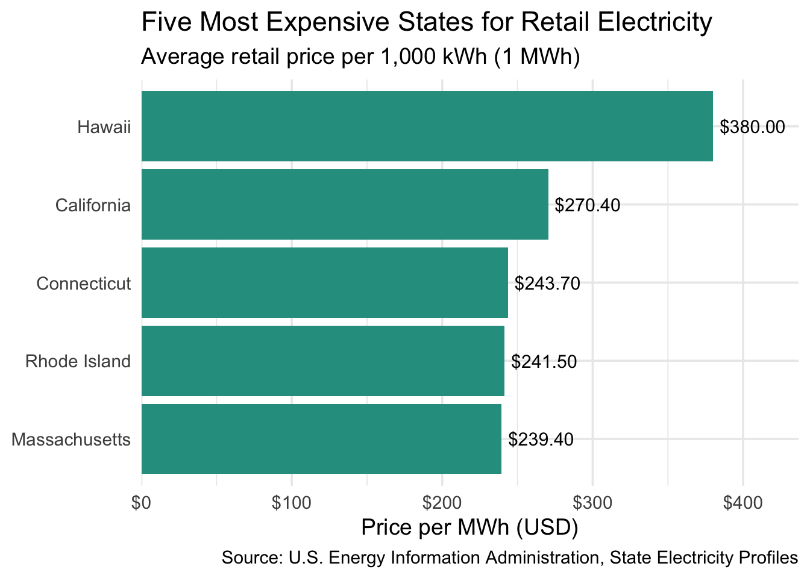
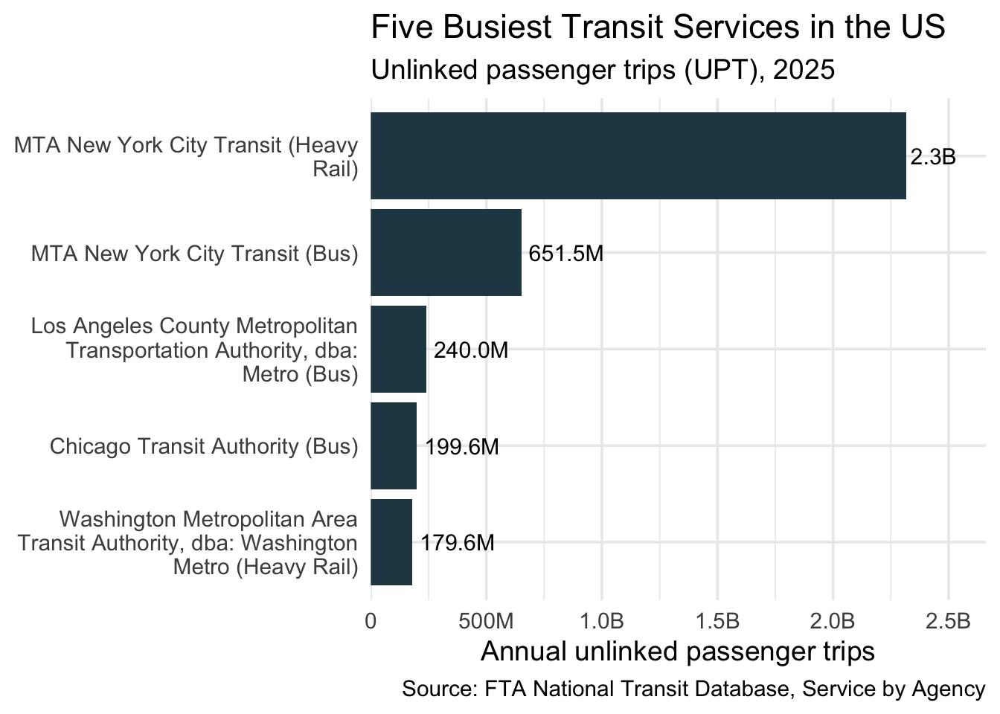
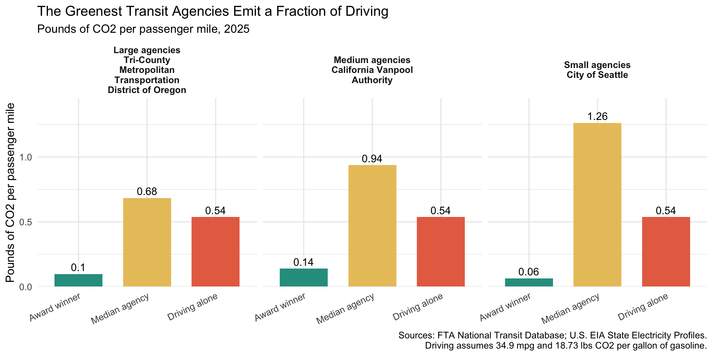
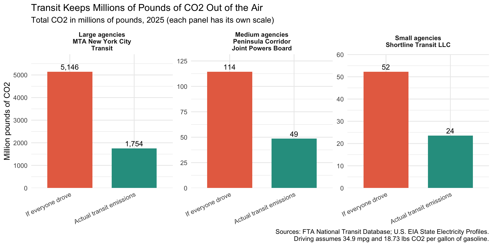

library(tidyverse)
library(stringr)
library(httr2)
library(rvest)
library(fs)
library(readxl)Green Transit Alliance 2025 Awards: Honoring America’s Greenest Transit Agencies
The typical agency does worse than driving, and the winners are the exception.
I am the Executive Director of the Green Transit Alliance, and I am announcing our annual awards recognizing the greenest small, medium, and large transit agencies in the United States. Using 2025 data from the Federal Transit Administration (FTA) and the Energy Information Administration (EIA), we compared transit agencies’ emissions with those produced by driving. Our findings show that while the typical transit agency produces more CO2 than driving, this year’s winners stand out by emitting only a fraction of those emissions.
get_eia_sep <- function(state, abbr){
state_formatted <- str_to_lower(state) |> str_replace_all("\\s", "")
dir_name <- fs::path("data", "mp02")
file_name <- fs::path(dir_name, state_formatted)
fs::dir_create(dir_name, recurse=TRUE)
if(!fs::file_exists(file_name)){
BASE_URL <- "https://www.eia.gov"
RESPONSE <- request(BASE_URL) |>
req_url_path("electricity", "state", state_formatted) |>
req_headers(
`User-Agent` = "Mozilla/5.0 (Macintosh; Intel Mac OS X 10.15; rv:149.0) Gecko/20100101 Firefox/149.0"
) |>
req_retry(max_tries = 4) |>
req_perform(file_name)
resp_check_status(RESPONSE)
}
TABLE <- read_html(file_name) |>
html_element("table") |>
html_table() |>
mutate(Item = str_to_lower(Item))
if("U.S. rank" %in% colnames(TABLE)){
TABLE <- TABLE |> rename(Rank = `U.S. rank`)
}
CO2_MWh <- TABLE |>
filter(Item == "carbon dioxide (lbs/mwh)") |>
pull(Value) |>
str_replace_all(",", "") |>
as.numeric()
PRIMARY <- TABLE |>
filter(Item == "primary energy source") |>
pull(Rank)
RATE <- TABLE |>
filter(Item == "average retail price (cents/kwh)") |>
pull(Value) |>
as.numeric()
GENERATION_MWh <- TABLE |>
filter(Item == "net generation (megawatthours)") |>
pull(Value) |>
str_replace_all(",", "") |>
as.numeric()
data.frame(CO2_MWh = CO2_MWh,
primary_source = PRIMARY,
electricity_price_MWh = RATE * 10,
generation_MWh = GENERATION_MWh,
state = state,
abbreviation = abbr
)
}
EIA_SEP_REPORT <- map2(state.name, state.abb, get_eia_sep) |> list_rbind()load_ntd_energy <- function(){
library(readxl)
library(httr2)
library(tidyverse)
library(fs)
# Create 'data/mp02' directory if not already present
DATA_DIR <- fs::path("data", "mp02")
fs::dir_create(DATA_DIR, recurse=TRUE)
NTD_ENERGY_FILE <- fs::path(DATA_DIR, "2025_ntd_energy.xlsx")
if(!fs::file_exists(NTD_ENERGY_FILE)){
request("https://www.transit.dot.gov/") |>
req_url_path("sites",
"fta.dot.gov",
"files",
"2026-09",
"2025 Energy Consumption_260806.xlsx") |>
req_headers(
`User-Agent` = "Mozilla/5.0 (Macintosh; Intel Mac OS X 10.15; rv:149.0) Gecko/20100101 Firefox/149.0") |>
req_perform(NTD_ENERGY_FILE)
}
if(file.info(NTD_ENERGY_FILE)$size < 1e4){
cat("I was unable to download the NTD Energy File. Please try again.\n")
stop("Download failed. Please delete the corrupted file by running `unlink('data/mp02/2025_ntd_energy.xlsx')` and try again.")
}
to_numeric_fill_0 <- function(x){
x <- if_else(x == "-", NA, x)
replace_na(as.numeric(x), 0)
}
read_excel(NTD_ENERGY_FILE) |>
select(-c(`Reporter Type`,
`Reporting Module`,
`Gallons of Other Fuel`,
`Other Fuel Description`)) |>
mutate(across(-c(`Agency Name`,
`Mode`,
`TOS`),
to_numeric_fill_0)) |>
group_by(`NTD ID`, `Mode`, `Agency Name`) |>
summarize(across(where(is.numeric), sum),
.groups = "keep") |>
mutate(ENERGY = sum(c_across(c(where(is.numeric))))) |>
filter(ENERGY > 0) |>
select(-ENERGY) |>
ungroup()
}
NTD_ENERGY <- load_ntd_energy()load_ntd_service <- function(){
library(httr2)
library(tidyverse)
library(fs)
# Create 'data/mp02' directory if not already present
DATA_DIR <- fs::path("data", "mp02")
fs::dir_create(DATA_DIR, recurse=TRUE)
NTD_SERVICE_FILE <- fs::path(DATA_DIR, "2025_ntd_service.csv")
if(!fs::file_exists(NTD_SERVICE_FILE)){
request("https://data.transportation.gov/resource/4fir-qbim.csv") |>
req_url_query(`$query`=paste(
"SELECT `_5_digit_ntd_id` AS `NTD_ID`",
"`max_agency` AS `AGENCY`",
"`max_reporter_type` AS `reporter_type`",
"`max_organization_type` AS `organization_type`",
"`max_city` AS `city`",
"`max_state` AS `state`",
"`mode`",
"`type_of_service`",
"`max_primary_uza_code` as `uza_code`",
"`max_primary_uza_name` as `uza_name`",
"`max_primary_uza_area_sq_miles` as `uza_sq_miles`",
"`max_primary_uza_population` as `uza_population`",
"`max_service_area_sq_miles` as `service_area_sq_miles`",
"`max_service_area_population` as `service_area_population`",
"`questionable_record` as `flagged_likely_inaccurate`",
"`sum_unlinked_passenger_trips_upt` as `total_upt`",
"`sum_passenger_miles` WHERE caseless_one_of(`report_year`, '2025') limit 50000",
sep=",")) |>
req_headers(
`User-Agent` = "Mozilla/5.0 (Macintosh; Intel Mac OS X 10.15; rv:149.0) Gecko/20100101 Firefox/149.0") |>
req_perform(NTD_SERVICE_FILE)
}
if(file.info(NTD_SERVICE_FILE)$size < 1e4){
cat("I was unable to download the NTD Service File. Please try again.\n")
stop("Download failed. Please delete the corrupted file by running `unlink('data/mp02/2025_ntd_service.csv')` and try again.")
}
read_csv(NTD_SERVICE_FILE) |>
mutate(flagged_likely_inaccurate = !is.na(flagged_likely_inaccurate))
}
NTD_SERVICE <- load_ntd_service()NTD_ENERGY |> distinct(Mode) |> arrange(Mode)# A tibble: 17 × 1
Mode
<chr>
1 AR
2 CB
3 CC
4 CR
5 DR
6 FB
7 HR
8 IP
9 LR
10 MB
11 MG
12 RB
13 SR
14 TB
15 TR
16 VP
17 YR # Recode the two-letter NTD mode codes into readable names
NTD_ENERGY <- NTD_ENERGY |>
mutate(Mode = recode_values(Mode,
"AR" ~ "Alaska Railroad",
"CB" ~ "Commuter Bus",
"CC" ~ "Cable Car",
"CR" ~ "Commuter Rail",
"DR" ~ "Demand Response",
"FB" ~ "Ferryboat",
"HR" ~ "Heavy Rail",
"IP" ~ "Inclined Plane",
"LR" ~ "Light Rail",
"MB" ~ "Bus",
"MG" ~ "Monorail/Automated Guideway",
"RB" ~ "Bus Rapid Transit",
"SR" ~ "Streetcar Rail",
"TB" ~ "Trolleybus",
"TR" ~ "Aerial Tramway",
"VP" ~ "Vanpool",
"YR" ~ "Hybrid Rail",
default = "Unknown"))
# Same recoding for the service table (its column is lowercase "mode")
NTD_SERVICE <- NTD_SERVICE |>
mutate(mode = recode_values(mode,
"AR" ~ "Alaska Railroad",
"CB" ~ "Commuter Bus",
"CC" ~ "Cable Car",
"CR" ~ "Commuter Rail",
"DR" ~ "Demand Response",
"FB" ~ "Ferryboat",
"HR" ~ "Heavy Rail",
"IP" ~ "Inclined Plane",
"LR" ~ "Light Rail",
"MB" ~ "Bus",
"MG" ~ "Monorail/Automated Guideway",
"RB" ~ "Bus Rapid Transit",
"SR" ~ "Streetcar Rail",
"TB" ~ "Trolleybus",
"TR" ~ "Aerial Tramway",
"VP" ~ "Vanpool",
"YR" ~ "Hybrid Rail",
default = "Unknown"))Exploratory Results: Electricity and Transit Data
This section presents exploratory results about electricity emissions and public transportation data. The information comes from the Energy Information Administration (EIA) and the Federal Transit Administration (FTA) National Transit Database (NTD). These results provide background for understanding the data and introduce the awards presented in the next section.
EIA_SEP_REPORT |>
slice_max(electricity_price_MWh, n = 5) |>
mutate(state = fct_reorder(state, electricity_price_MWh)) |>
ggplot(aes(x = electricity_price_MWh, y = state)) +
geom_col(fill = "#2a9d8f") +
geom_text(aes(label = scales::dollar(electricity_price_MWh)),
hjust = -0.1, size = 4) +
scale_x_continuous(labels = scales::dollar,
expand = expansion(mult = c(0, 0.15))) +
labs(title = "Five Most Expensive States for Retail Electricity",
subtitle = "Average retail price per 1,000 kWh (1 MWh)",
x = "Price per MWh (USD)",
y = NULL,
caption = "Source: U.S. Energy Information Administration, State Electricity Profiles") +
theme_minimal(base_size = 14)
Hawaii has the highest retail electricity price at $380.00 per MWH, which is $109.60 higher than second-place California at $270.40 per MWh.
EIA_SEP_REPORT |>
slice_max(CO2_MWh, n = 5) |>
transmute(State = state,
`CO2 (lbs per MWh)` = scales::comma(CO2_MWh),
`Primary Source` = primary_source) |>
knitr::kable(align = c("l", "r", "l"),
caption = "Five states with the dirtiest electricity mix. Source: U.S. EIA, State Electricity Profiles.")| State | CO2 (lbs per MWh) | Primary Source |
|---|---|---|
| West Virginia | 1,912 | Coal |
| Kentucky | 1,744 | Coal |
| Wyoming | 1,724 | Coal |
| Missouri | 1,456 | Coal |
| Hawaii | 1,426 | Petroleum |
US_CO2_AVG <- weighted.mean(EIA_SEP_REPORT$CO2_MWh,
w = EIA_SEP_REPORT$generation_MWh)
US_CO2_AVG[1] 784.8565On average, the US emits 785 pounds of CO2 per MWh of electricity generated.
NY_CO2 <- EIA_SEP_REPORT |> filter(abbreviation == "NY") |> pull(CO2_MWh)
TX_CO2 <- EIA_SEP_REPORT |> filter(abbreviation == "TX") |> pull(CO2_MWh)
TX_NY_RATIO <- TX_CO2 / NY_CO2
c(NY_CO2, TX_CO2, TX_NY_RATIO)[1] 537.000000 823.000000 1.532588West Virginia, Kentucky, Wyoming, Missouri, and Hawaii have the highest CO2 emissions per MWh, with most relying on coal for electricity and Hawaii relying mainly on petroleum.
New York’s electricity mix emits 537 lbs of CO2 per MWh versus 823 for Texas, so New York’s is about 1.53 times cleaner.
NTD_ENERGY |>
group_by(`NTD ID`, `Agency Name`) |>
summarize(across(starts_with("Gallons of"), sum), .groups = "drop") |>
mutate(`Total Gallons` = rowSums(pick(starts_with("Gallons of")))) |>
slice_max(`Total Gallons`, n = 5) |>
select(-`NTD ID`) |>
# drop fuel columns that are zero for all five agencies
select(where(~ !is.numeric(.x) || sum(.x) > 0)) |>
rename_with(~ str_remove(.x, "Gallons of "), starts_with("Gallons of")) |>
rename(Agency = `Agency Name`) |>
relocate(`Total Gallons`, .after = Agency) |>
mutate(across(where(is.numeric), scales::comma)) |>
knitr::kable(align = c("l", rep("r", 6)),
caption = "Five transit agencies using the most fuel (gallons, 2025). Source: FTA National Transit Database.")| Agency | Total Gallons | Compressed Natural Gas | Diesel Fuel | Gasoline |
|---|---|---|---|---|
| New Jersey Transit Corporation | 41,721,414 | 1,521,492 | 38,144,027 | 2,055,895 |
| MTA New York City Transit | 40,816,461 | 6,328,381 | 30,217,934 | 4,270,146 |
| Los Angeles County Metropolitan Transportation Authority | 31,404,951 | 30,410,141 | 0 | 994,810 |
| Northeast Illinois Regional Commuter Railroad Corporation | 26,829,691 | 0 | 26,829,691 | 0 |
| Massachusetts Bay Transportation Authority | 23,452,535 | 1,534,123 | 20,627,960 | 1,290,452 |
New Jersey Transit used the most fuel at 41,721,414 gallons, followed closely by MTA New York City Transit, while most agencies mainly use diesel and LA Metro relies mostly on compressed natural gas.
FUEL_TOTALS <- NTD_ENERGY |>
summarize(across(c(starts_with("Gallons of"), starts_with("Kilowatt"), starts_with("Kilograms")), sum)) |>
pivot_longer(everything(), names_to = "fuel", values_to = "total") |>
filter(total > 0) |>
arrange(total)
LEAST_FUEL <- FUEL_TOTALS |> slice(1)
FUEL_TOTALS# A tibble: 10 × 2
fuel total
<chr> <dbl>
1 Gallons of Liquified Nat Gas 223362
2 Gallons of Ethanol 569874
3 Kilograms of Hydrogen 569874
4 Gallons of Liquified Petroleum Gas 9261912
5 Gallons of Bio-Diesel 30803208
6 Gallons of Gasoline 99857229
7 Kilowatt hours of Electric Battery 112166664
8 Gallons of Compressed Natural Gas 198830256
9 Gallons of Diesel Fuel 437927889
10 Kilowatt hours of Electric Propulsion 6666445400The least commonly used fuel in US public transit is Gallons of Liquified Nat Gas, with only 223,362 units reported.
NTD_SERVICE |>
group_by(NTD_ID, AGENCY, mode) |>
summarize(total_upt = sum(total_upt, na.rm = TRUE), .groups = "drop") |>
slice_max(total_upt, n = 5) |>
mutate(service = str_c(AGENCY, " (", mode, ")"),
service = str_wrap(service, width = 35),
service = fct_reorder(service, total_upt)) |>
ggplot(aes(x = total_upt, y = service)) +
geom_col(fill = "#264653") +
geom_text(aes(label = scales::label_number(scale_cut = scales::cut_short_scale(),
accuracy = 0.1)(total_upt)),
hjust = -0.1, size = 4) +
scale_x_continuous(labels = scales::label_number(scale_cut = scales::cut_short_scale()),
expand = expansion(mult = c(0, 0.15))) +
labs(title = "Five Busiest Transit Services in the US",
subtitle = "Unlinked passenger trips (UPT), 2025",
x = "Annual unlinked passenger trips",
y = NULL,
caption = "Source: FTA National Transit Database, Service by Agency") +
theme_minimal(base_size = 14)
MTA_TRIP <- NTD_SERVICE |>
filter(str_detect(AGENCY, "MTA New York City Transit")) |>
summarize(total_miles = sum(sum_passenger_miles, na.rm = TRUE),
total_trips = sum(total_upt, na.rm = TRUE)) |>
mutate(avg_trip_miles = total_miles / total_trips)
MTA_TRIP# A tibble: 1 × 3
total_miles total_trips avg_trip_miles
<dbl> <dbl> <dbl>
1 9588332516 3014773373 3.18The average trip on MTA New York City Transit is about 3.2 miles long.
NTD_SERVICE |>
inner_join(EIA_SEP_REPORT,
by = join_by(state == abbreviation)) |>
filter(primary_source == "Nuclear") |>
summarize(nuclear_state_upt = sum(total_upt, na.rm = TRUE))# A tibble: 1 × 1
nuclear_state_upt
<dbl>
1 561675933# Service data: one row per agency + mode (summing across service types)
SERVICE_BY_MODE <- NTD_SERVICE |>
mutate(NTD_ID = as.numeric(NTD_ID)) |>
group_by(NTD_ID, mode) |>
summarize(state = first(state),
upt = sum(total_upt, na.rm = TRUE),
miles = sum(sum_passenger_miles, na.rm = TRUE),
.groups = "drop")
# Join energy + service + state grid emissions
EMISSIONS <- NTD_ENERGY |>
mutate(NTD_ID = as.numeric(`NTD ID`)) |>
inner_join(SERVICE_BY_MODE,
by = join_by(NTD_ID, Mode == mode)) |>
left_join(select(EIA_SEP_REPORT, abbreviation, CO2_MWh),
by = join_by(state == abbreviation)) |>
# states missing from EIA (e.g. territories): use the US average
mutate(CO2_MWh = coalesce(CO2_MWh, US_CO2_AVG)) |>
mutate(
# lbs CO2 per gallon, from EIA Carbon Dioxide Emissions Coefficients
# (Sept. 18, 2024). Bio-diesel, ethanol, LNG, and bunker fuel are
# approximate values not listed in that table.
lbs_co2 =
`Gallons of Diesel Fuel` * 22.45 +
`Gallons of Gasoline` * 18.73+
`Gallons of Bio-Diesel` * 20.8 +
`Gallons of Bunker Fuel` * 24.0 +
`Gallons of Compressed Natural Gas` * 14.8 +
`Gallons of Liquified Nat Gas` * 10.4 +
`Gallons of Liquified Petroleum Gas` * 12.68 +
`Gallons of Ethanol` * 12.7 +
`Gallons of Kerosene` * 21.78 +
# electricity: kWh / 1000 = MWh, times state grid lbs per MWh
(`Kilowatt hours of Electric Battery` +
`Kilowatt hours of Electric Propulsion`) / 1000 * CO2_MWh
) |>
select(NTD_ID, Agency = `Agency Name`, Mode, state, upt, miles, lbs_co2)
nrow(NTD_ENERGY); nrow(EMISSIONS)[1] 1134[1] 1134EMISSIONS |> slice_max(lbs_co2, n = 5)# A tibble: 5 × 7
NTD_ID Agency Mode state upt miles lbs_co2
<dbl> <chr> <chr> <chr> <dbl> <dbl> <dbl>
1 20008 MTA New York City Transit Heav… NY 2.32e9 8.11e9 9.00e8
2 20008 MTA New York City Transit Bus NY 6.52e8 1.22e9 6.68e8
3 50118 Northeast Illinois Regional Commuter… Comm… IL 3.80e7 8.27e8 6.31e8
4 20080 New Jersey Transit Corporation Bus NJ 1.41e8 1.03e9 5.35e8
5 20080 New Jersey Transit Corporation Comm… NJ 6.07e7 1.54e9 5.28e8# One row per agency: sum emissions, trips, and miles across all modes
AGENCY_EFFICIENCY <- EMISSIONS |>
group_by(NTD_ID, Agency, state) |>
summarize(lbs_co2 = sum(lbs_co2),
upt = sum(upt),
miles = sum(miles),
.groups = "drop") |>
# drop agencies with no ridership data, and very tiny ones
filter(upt > 0, miles > 0, upt >= 100000) |>
mutate(lbs_per_upt = lbs_co2 / upt,
lbs_per_mile = lbs_co2 / miles,
# size categories based on annual trips
size = case_when(upt >= 20e6 ~ "Large",
upt >= 3e6 ~ "Medium",
TRUE ~ "Small"),
size = factor(size, levels = c("Small", "Medium", "Large")))
AGENCY_EFFICIENCY |> count(size)# A tibble: 3 × 2
size n
<fct> <int>
1 Small 322
2 Medium 121
3 Large 42AGENCY_EFFICIENCY |>
group_by(size) |>
slice_min(lbs_per_mile, n = 3) |>
select(size, Agency, state, lbs_per_upt, lbs_per_mile)# A tibble: 9 × 5
# Groups: size [3]
size Agency state lbs_per_upt lbs_per_mile
<fct> <chr> <chr> <dbl> <dbl>
1 Small City of Seattle WA 0.0575 0.0639
2 Small Adirondack Transit Lines, Inc. NY 12.8 0.146
3 Small Metropolitan Transportation Commission CA 8.58 0.155
4 Medium California Vanpool Authority CA 4.36 0.139
5 Medium Anaheim Transportation Network CA 0.200 0.141
6 Medium Snohomish County Public Transportation … WA 0.922 0.142
7 Large Tri-County Metropolitan Transportation … OR 0.400 0.0974
8 Large San Francisco Bay Area Rapid Transit Di… CA 2.13 0.153
9 Large Port Authority Trans-Hudson Corporation NY 0.835 0.180 # Assumptions for the "driving instead" comparison (state them in your write-up)
CAR_MPG <- 34.9 # projected NHTSA fuel economy standard, not today's average car
LBS_CO2_GASOLINE <- 18.73 # lbs CO2 per gallon of finished motor gasoline (EIA)
AWARDS <- AGENCY_EFFICIENCY |>
mutate(driving_lbs_co2 = miles / CAR_MPG * LBS_CO2_GASOLINE,
avoided_lbs_co2 = driving_lbs_co2 - lbs_co2,
pct_avoided = avoided_lbs_co2 / driving_lbs_co2)
# Award 1: Greenest Agency, one winner per size group
GREENEST <- AWARDS |>
group_by(size) |>
slice_min(lbs_per_mile, n = 1) |>
ungroup()
# Award 2: Most Emissions Avoided, one winner per size group
MOST_AVOIDED <- AWARDS |>
group_by(size) |>
slice_max(avoided_lbs_co2, n = 1) |>
ungroup()
# Reference value: the median agency in each size group
MEDIANS <- AWARDS |>
group_by(size) |>
summarize(median_lbs_per_mile = median(lbs_per_mile),
median_pct_avoided = median(pct_avoided),
.groups = "drop")
GREENEST |> select(size, Agency, state, lbs_per_mile, pct_avoided)# A tibble: 3 × 5
size Agency state lbs_per_mile pct_avoided
<fct> <chr> <chr> <dbl> <dbl>
1 Small City of Seattle WA 0.0639 0.881
2 Medium California Vanpool Authority CA 0.139 0.741
3 Large Tri-County Metropolitan Transportation … OR 0.0974 0.818MOST_AVOIDED |> select(size, Agency, state, avoided_lbs_co2, pct_avoided)# A tibble: 3 × 5
size Agency state avoided_lbs_co2 pct_avoided
<fct> <chr> <chr> <dbl> <dbl>
1 Small Shortline Transit LLC NJ 28710643. 0.549
2 Medium Peninsula Corridor Joint Powers Board CA 65810817. 0.575
3 Large MTA New York City Transit NY 3392104676. 0.659MEDIANS# A tibble: 3 × 3
size median_lbs_per_mile median_pct_avoided
<fct> <dbl> <dbl>
1 Small 1.26 -1.35
2 Medium 0.938 -0.747
3 Large 0.684 -0.274Greenest Transit Agency Awards: How the Winners Compare with Typical Agencies
The Greenest Transit Agency Awards measure CO2 emissions per passenger mile, which is a fair way to compare agencies because it considers how far passengers actually travel. Agencies are divided into three groups based on annual ridership: small (under 3 million trips), medium (3 million to 20 million trips), and large (at least 20 million trips). This year’s winners are the City of Seattle for small agencies (0.064), California Vanpool Authority for medium agencies (0.139), and Tri-County Metropolitan Transportation District of Oregon for large agencies (0.097) pounds of CO2 per passenger mile. Compared with driving, which produces about 0.54 pounds of CO2 per passenger mile, the typical agency (meaning the median agency) produces more, with median emissions of 1.26 for small, 0.94 for medium, and 0.68 for large agencies, using the same unit. The winning agencies produce much less CO2 per passenger mile than the typical agency. One important note is that Anaheim’s medium-agency result (0.141) is nearly tied with California Vanpool Authority (0.139), which raises a fairness question about whether a vanpool service should be compared directly with a traditional transit agency when deciding the award.
DRIVING_LBS_PER_MILE <- LBS_CO2_GASOLINE / CAR_MPG
GREENEST |>
left_join(MEDIANS, by = "size") |>
transmute(panel = str_c(size, " agencies\n", str_wrap(Agency, 22)),
`Award winner` = lbs_per_mile,
`Median agency` = median_lbs_per_mile,
`Driving alone` = DRIVING_LBS_PER_MILE) |>
pivot_longer(-panel, names_to = "comparison", values_to = "lbs") |>
mutate(comparison = factor(comparison,
levels = c("Award winner", "Median agency", "Driving alone"))) |>
ggplot(aes(x = comparison, y = lbs, fill = comparison)) +
geom_col(width = 0.7) +
geom_text(aes(label = round(lbs, 2)), vjust = -0.4, size = 4.5) +
facet_wrap(~ panel, nrow = 1) +
scale_fill_manual(values = c("Award winner" = "#2a9d8f",
"Median agency" = "#e9c46a",
"Driving alone" = "#e76f51")) +
scale_y_continuous(expand = expansion(mult = c(0, 0.15))) +
labs(title = "The Greenest Transit Agencies Emit a Fraction of Driving",
subtitle = "Pounds of CO2 per passenger mile, 2025",
x = NULL,
y = "Pounds of CO2 per passenger mile",
caption = paste0("Sources: FTA National Transit Database; U.S. EIA State Electricity Profiles.\n",
"Driving assumes ", CAR_MPG, " mpg and ", LBS_CO2_GASOLINE,
" lbs CO2 per gallon of gasoline.")) +
theme_minimal(base_size = 14) +
theme(legend.position = "none",
axis.text.x = element_text(angle = 25, hjust = 1),
strip.text = element_text(face = "bold"))
Most Emissions Avoided: Recognizing the Biggest Environmental Impact
The Most Emissions Avoided Award measures how much CO2 a transit agency prevents from being released compared with the emissions that would have been produced if passengers had driven the same distance in cars. To calculate this, we divide the agency’s total passenger miles by 34.9 miles per gallon and multiply the result by 18.73 pounds of CO2 per gallon to estimate driving emissions. The 34.9 miles per gallon figure comes from the National Highway Traffic Safety Administration (NHTSA) fuel economy standards. This is a conservative assumption because it makes cars appear more fuel-efficient, which lowers the estimated driving emissions and makes the amount of CO2 avoided harder to achieve. We then subtract the agency’s actual emissions from the estimated driving emissions to find the total CO2 avoided. Unlike the previous award, which focuses on the lowest emissions per passenger mile, this award measures the total environmental impact. As a result, larger agencies have an advantage because they serve more passengers. This year’s winners are Shortline Transit LLC for small agencies, avoiding 28,710,643 pounds of CO2 (about 55% below driving), although this result should be read with caution because the NTD flags Shortline’s record as likely inaccurate; without this record, Metropolitan Transportation Commission would be the small-agency winner. Peninsula Corridor Joint Powers Board is the medium-agency winner, avoiding 65,810,817 pounds (about 58%), and MTA New York City Transit is the large-agency winner, avoiding 3,392,104,676 pounds (about 66%). However, the typical agency, measured by the median, actually produced more emissions than the driving comparison, with negative percentages of -135% for small agencies, -75% for medium agencies, and -27% for large agencies. Chart 2 uses a separate scale for each agency size group, making it easier to compare the winners within their own categories.
MOST_AVOIDED |>
transmute(panel = str_c(size, " agencies\n", str_wrap(Agency, 22)),
`If everyone drove` = driving_lbs_co2 / 1e6,
`Actual transit emissions` = lbs_co2 / 1e6) |>
pivot_longer(-panel, names_to = "scenario", values_to = "million_lbs") |>
mutate(scenario = factor(scenario,
levels = c("If everyone drove", "Actual transit emissions"))) |>
ggplot(aes(x = scenario, y = million_lbs, fill = scenario)) +
geom_col(width = 0.7) +
geom_text(aes(label = scales::comma(million_lbs, accuracy = 1)),
vjust = -0.4, size = 4.5) +
facet_wrap(~ panel, nrow = 1, scales = "free_y") +
scale_fill_manual(values = c("If everyone drove" = "#e76f51",
"Actual transit emissions" = "#2a9d8f")) +
scale_y_continuous(expand = expansion(mult = c(0, 0.15))) +
labs(title = "Transit Keeps Millions of Pounds of CO2 Out of the Air",
subtitle = "Total CO2 in millions of pounds, 2025 (each panel has its own scale)",
x = NULL,
y = "Million pounds of CO2",
caption = paste0("Sources: FTA National Transit Database; U.S. EIA State Electricity Profiles.\n",
"Driving assumes ", CAR_MPG, " mpg and ", LBS_CO2_GASOLINE,
" lbs CO2 per gallon of gasoline.")) +
theme_minimal(base_size = 14) +
theme(legend.position = "none",
axis.text.x = element_text(angle = 25, hjust = 1),
strip.text = element_text(face = "bold"))
Highest Emissions per Passenger Mile Award
The Highest Emissions per Passenger Mile Award recognizes the large transit agency with the highest CO2 emissions for each passenger mile. The winner is the City of Phoenix, with 1.18 pounds of CO2 per passenger mile. This is about 2.2 times the driving benchmark of 0.54 pounds and about 1.7 times the median for large agencies, which is 0.68 pounds. The runner-up is the Broward County Board of County Commissioners, at 1.00 pound per passenger mile, and Phoenix’s records are not flagged as inaccurate. The results also show that 62% of large agencies (26 out of 42) produce more CO2 per passenger mile than the driving benchmark. This award focuses on emissions reduction, not on judging an agency’s overall efforts; agencies could work to reduce emissions by reviewing the fuels and power sources they use, although the data does not identify the exact causes of Phoenix’s emissions.
# Own award: highest CO2 per passenger mile among large agencies
AWARDS |>
filter(size == "Large") |>
slice_max(lbs_per_mile, n = 2) |>
transmute(Agency,
State = state,
`Lbs CO2 per passenger mile` = round(lbs_per_mile, 2),
`Multiple of driving` = round(lbs_per_mile / DRIVING_LBS_PER_MILE, 1)) |>
knitr::kable(align = c("l", "l", "r", "r"),
caption = "Large agencies with the highest CO2 per passenger mile, 2025. Sources: FTA National Transit Database; U.S. EIA State Electricity Profiles.")| Agency | State | Lbs CO2 per passenger mile | Multiple of driving |
|---|---|---|---|
| City of Phoenix | AZ | 1.18 | 2.2 |
| Broward County Board of County Commissioners | FL | 1.00 | 1.9 |
# How many large agencies emit more than driving would?
AWARDS |>
filter(size == "Large") |>
summarize(`Large agencies` = n(),
`Emitting more than driving` = sum(pct_avoided < 0),
`Share` = scales::percent(mean(pct_avoided < 0))) |>
knitr::kable(align = "r")| Large agencies | Emitting more than driving | Share |
|---|---|---|
| 42 | 26 | 62% |
Data Sources, Methodology, and Limitations
This analysis uses three data sources: the FTA’s 2025 National Transit Database (Energy Consumption and Service by Agency), the EIA’s State Electricity Profiles, and the EIA’s Carbon Dioxide Emissions Coefficients table from September 18, 2024, based on EPA factors. Fuel emissions were calculated by multiplying gallons used by the corresponding CO2 factor in pounds per gallon. Electricity emissions were calculated using each state’s average grid emissions in pounds per megawatt hour. Agencies were grouped by annual trips: small (under 3 million), medium (3 million to 20 million), and large (at least 20 million). Agencies with fewer than 100,000 annual trips were excluded.
For the driving comparison, we used 34.9 miles per gallon from NHTSA standards and 18.73 pounds of CO2 per gallon of gasoline. There are several limitations to consider: electricity emissions use state averages rather than each agency’s actual power source, meaning an agency’s ranking can partly depend on where it operates. For example, Seattle and TriMet may benefit from Washington’s and Oregon’s cleaner electricity grids, which could give them an advantage over agencies in states with higher grid emissions. Territories without state-level data use the U.S. average. Emission factors for biodiesel, ethanol, LNG, and bunker fuel are approximations, while the CNG factor of 14.8 is based on an assumed energy content. Hydrogen was also included in the data in kilograms, but it was counted as zero emissions because using hydrogen produces no CO2 at the vehicle, and emissions from producing hydrogen were not included in the calculation. The NTD flags Shortline Transit LLC’s record as likely inaccurate, but this analysis did not exclude flagged records, so its small-agency Most Emissions Avoided result should be interpreted with caution. Finally, 34.9 mpg is a projected target for future cars rather than today’s average, making our estimated emissions avoided conservative.
Overall Findings and Recommendations
The main message of this report is that public transportation is not always greener than driving, because the typical transit agency produces more CO2 per passenger mile than the driving benchmark used in this report. However, some agencies perform much better. Seattle, California Vanpool Authority, and TriMet are examples of agencies that produce much lower emissions per passenger mile than driving. Their results may be related to cleaner electricity sources and how efficiently they use their vehicles, although the results do not prove the exact reasons why they perform better.
The results also show that being the most efficient is not the same as avoiding the most total emissions. For example, Seattle, California Vanpool Authority, and TriMet won the efficiency awards, while Shortline Transit, Peninsula Corridor, and MTA New York City Transit won the total CO2 avoided awards. This means that both emissions per passenger mile and total emissions avoided are important when judging how green an agency is. One limitation is that the comparison uses a driving benchmark of 34.9 miles per gallon. Another limitation is that electricity emissions are estimated using state averages rather than the exact electricity used by each agency. In my opinion, public transportation can help reduce emissions, but its environmental benefits depend on the agency. Transit agencies should focus on cleaner energy and attracting more passengers, while riders should consider the environmental performance of the transit service available to them.
NoteAI Usage Statement
I used AI throughout different stages of this assignment as a support tool. First, I used Claude to help me find and understand the R code needed for the analysis. I also used it to help with coding errors and debugging when I had problems running certain commands. In addition, I used it to review my graphs, check calculations, and help me identify whether the results and numbers made sense. I also used AI to help me find relevant websites and sources for the information used in my report. This included finding information from the National Transit Database (NTD), the Energy Information Administration (EIA), and the National Highway Traffic Safety Administration (NHTSA). Before writing the report, I used AI to help organize my ideas, create an outline, and decide how to structure the different sections. I also asked for feedback on some of my wording to make sure my explanations were clear and easy to understand. To make sure the information was reliable, I checked the AI’s suggestions instead of accepting them without review. I compared the reported numbers with my actual R Console results and reviewed the original sources. I also checked the EIA and NHTSA information and reviewed the NTD records, including records marked as potentially inaccurate. This helped me confirm the figures, understand the limitations of the data, and make sure my report reflected the results of my analysis.